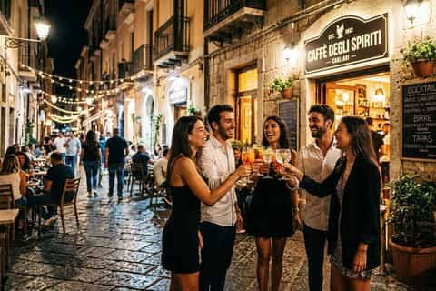

CityLoop Quest — Tropéa


Le centre historique change d’ambiance en quelques dizaines de pas. Piazza Ercole joue le rôle de salon, le Corso concentre la promenade, le Largo Duomo respire au rythme des cloches et les petits affacci ouvrent des fenêtres sur la mer.
Autour des palais, les ruelles conservent une atmosphère plus résidentielle. Le linge, les plantes en pot et les voix derrière les fenêtres rappellent que le patrimoine est habité. La meilleure visite consiste parfois à ralentir devant une porte entrouverte plutôt qu’à courir vers le prochain panorama.
Le Borgo s’étend vers l’intérieur et les axes plus modernes. On y trouve les services quotidiens, la gare et les commerces moins tournés vers les visiteurs. Cette partie montre comment Tropéa s’est développée au-delà du promontoire sans abandonner son centre ancien.
En descendant vers le port, l’odeur change : sel, carburant, filets et bois humide remplacent les parfums de cuisine des ruelles. Les départs matinaux et le retour des bateaux donnent au quartier maritime un calendrier différent de celui des terrasses.
La plage possède enfin ses propres saisons. En août, elle devient une ville temporaire ; en hiver, elle appartient aux vagues, aux pêcheurs et aux promeneurs. Tropéa n’a donc pas une seule ambiance, mais plusieurs villes superposées selon l’heure, le quartier et le mois.